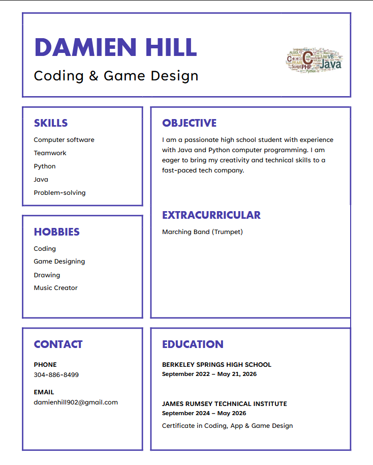

About Me

I'm a beginner coder with a passion for learning and creating. I have experience in various programming languages, including Lua, HTML, CSS, and more. I'm constantly honing my skills and exploring new technologies to expand my knowledge and capabilities. I enjoy working on projects that challenge me and allow me to apply my coding skills in creative ways. I'm excited to continue growing as a developer and contribute to meaningful projects in the future.
Tools I Use
- Visual Studio Code
- Git and GitHub
- HTML
- CSS
- Lua
- Python
- C#
- Unity Engine